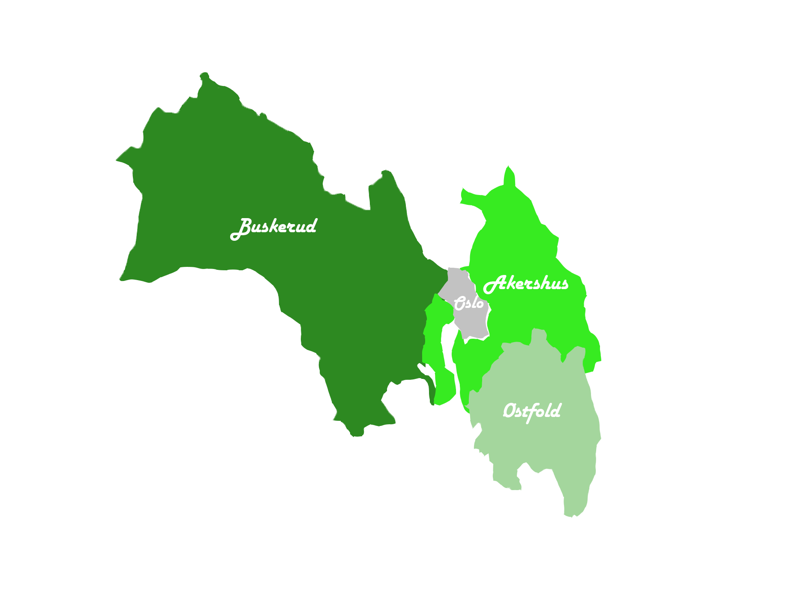

Begynnelsen for Viken fylkeskommune
Det ble full strid når Stortinget under sommeren 2017 vedtok under behandling av regionreformen 2014 – 2018 som en del av Solberg-regjerningen å slå sammen blant annet Akershus, Buskerud og Østfold til det vi kjenner som Viken med innvirkning 1. januar 2020. Viken skulle nå inneholde nå 51 kommuner. Det nåværende fylket har sitt opphav fra kystlandskapet rundt Oslofjorden, Viken eller Vika. Det var lenge et grenseområde mellom Sverige i øst, Danmark i sør og Norge i vest og under 800- og 900-tallet var området så å si kontrollert av danske konger. Olav Tryggvason, Olav Haraldsson (Olav den Hellige), Magnus Olavsson og Harald Hardråde menes å kan ha vært de første norske kongene som tok kontroll over daværende Viken. Under borgerkrigstiden (1130-1240) var det baglerne som dominerte over Viken som hadde dansk støtte jobbet mot birkebeinerne. Det måtte likevel til at den danske kongen Valdemar II gikk bort i 1241 før de norske kongene klarte å få fullstendig kontroll over Østlandet og Viken, og det var da hovedstaden som på det tidspunktet var Bergen ble flyttet til Oslo i 1314 som et symbol på denne epoken.
Starten på en ny regionreform
Fylkeskommunen kan forklares som et territorielt avgrenset område som har blitt gitt offentlig myndighet fra staten. Det har vært flere diskusjoner rundt hva de respektive fylkene skal ta seg av, slik som under oppgaveoverføringen i 2006 så ble det tatt opp spørsmål rundt blant annet Statens Vegvesen som var en statlig oppgave skulle overføres til fylkene. Fylkeskommunen har et fylkesting, som utfører delvis funksjonene gjennom et fylkesutvalg som består av minimum fem medlemmer. Gjennom fylkestinget bestemmes det hvilke oppgaver som skal opp i behandling eller eventuelt delegeres videre til fylkesutvalget. Fylkesutvalget skal behandle forslag til årsbudsjett, skatt og økonomiplan. Fylkesrådmannen leder administrativt når det kommer til fylkeskommunen. Noen av oppgavene som anses av de viktigste delene av fylkeskommunen er den videregående skolen, tannhelse i form av den offentlige, idrett og friluftsliv, næringsutvikling og miljøforvaltning. Frem til helsereformen i 2002 så hadde fylkeskommunen også ansvaret for sykehus og spesialhelsetjenesten, som da ble overført til staten.
Starten på fylkeskommunene
Selv om fylkeskommunen har ei lang historie så har den langt ifra vært en viktig organ. Etter formannskapslovene av 1837 som besluttet at ordførerne, fylkesmannen og fogdene som samlet seg èn gang i året for å bestemme budsjett og eventuelt behandle andre saker så har fylkeskommunen ellers hatt en beskjeden rolle, som hovedsakelig ble betraktet som en sekundærkommune som passet på oppgavene innenfor fylket, så var det ikke før 1940 at det endret på seg. Fylkeskommunen fikk stadig vekk flere oppgaver, fra år 1950 ble de tradisjonelle oppgavene mer ressurskrevende. Veksten økte fra 1964 siden bykommunene ble plassert i fylkeskommunene. Den største og tyngste oppgaven var når eierskap til og drift av sykehus etter år 1969. Det var ikke før i 1976 fylkeskommunen ble en egen selvstendig forvaltningsenhet og som opphørte koblingen til fylkesmannsembetet som hadde vart siden 1837. Siden reformen som gjorde at fylkeskommunen ble en egen selvstendig administrativ enhet, fikk det et eget fylkestingsvalg, beskatningsrett og ble ledet av en fylkesrådmann, i tillegg til at statens rolle i bestemmelser ble noe svekket. Denne rollen hadde vært noe preget av kontroll fra statens side. Som en del av den nye kommuneloven som ble vedtatt i 1992 gjorde at kontrollrollen til Staten ble begrenset.
Det politiske spekteret
Det er ikke bare her til lands som det er jobbet opp mot en ny regionform, allerede siden 2000-tallet har de nordiske landene arbeidet med en strukturell regionreform. Danmark var førstemann ut. Allerede i 2005 så begynte den daværende rødgrønne regjeringen med en reformprosess der de ønsket å en ny inndeling som ville vært ønskelig at tredde i kraft 2010, her var det ikke foreslått hvilke regioner som ville inkluderes og sammenslått. Når Solberg-regjeringen (2013-2021) ble et faktum, la regjeringen fram en proposisjon til det daværende Storting der målet var å få en ny regionstruktur. Forslaget ved å gjøre 19 fylker til 11 ville vært den største strukturelle endringen som har vært i fylkeskommunens grenser på over 100 år og den største endringen sett historisk. Arbeiderpartiet som har jobbet for en slik reform tidligere ved å omgjøre endringer av fylkeskommunen til større regionale områder ved å utføre sammenslåing av fylker, viste motstand når den blå-blå regjeringen ønsket å fortsette denne reformen og har siden den gang jobbet i mot dette og i senere tid for å reversere sammenslåingene.
 Man kan stille seg spørsmålet om sammenslåingene var en lite gjennomtenkt plan eller om det kun var en prestisje prosjekt, når det ikke gikk to år en gang før det ble vedtatt å oppløse de nye fylkene fra fylket ble offisielt 1. januar 2020. Dette er ikke bare masse arbeid som kreves, men også svært kostbart. Siden partier som stemte imot dette, jobbet for denne reformen når de regjerte så kan det foreligge grunnlag om å kun være uenig bare for å være det. Og etter at forslaget ble dårlig mottatt av befolkningen, så har enkelte partier vendt seg mot velgerne å erklært seg som motstandere og forkjempere av en oppløsning, på tross at de jobbet for dette noen år tilbake. I Troms og Finnmark var det så høy mostand, spesielt fra Finnmark sin side der det ble gjennomført en folkeavstemning med 87% som stemte imot av en valgdeltakelse på 58%. Tross andelen som stemte imot ble det likevel vedtatt en tvangssammenslåing, det vil si særlig lite basering på frivillighet.
Man kan stille seg spørsmålet om sammenslåingene var en lite gjennomtenkt plan eller om det kun var en prestisje prosjekt, når det ikke gikk to år en gang før det ble vedtatt å oppløse de nye fylkene fra fylket ble offisielt 1. januar 2020. Dette er ikke bare masse arbeid som kreves, men også svært kostbart. Siden partier som stemte imot dette, jobbet for denne reformen når de regjerte så kan det foreligge grunnlag om å kun være uenig bare for å være det. Og etter at forslaget ble dårlig mottatt av befolkningen, så har enkelte partier vendt seg mot velgerne å erklært seg som motstandere og forkjempere av en oppløsning, på tross at de jobbet for dette noen år tilbake. I Troms og Finnmark var det så høy mostand, spesielt fra Finnmark sin side der det ble gjennomført en folkeavstemning med 87% som stemte imot av en valgdeltakelse på 58%. Tross andelen som stemte imot ble det likevel vedtatt en tvangssammenslåing, det vil si særlig lite basering på frivillighet.
Den nåværende regjeringen som styres av arbeiderpartiet og senterpartiet hadde i Hurdalserklæringen som ett av punktene om at Viken skulle oppløses og ikke bøtelegge kommuner som ikke ønsket å slå seg sammen. Arbeiderpartiet ønsket at Viken skulle oppløses av seg selv på frivillig vis mens Senterpartiet ønsket en tvangsoppløsning via et Stortingsvedtak, her var det forslaget til Senterpartiet som ble realitet. Inndelingsloven tilsier at både Stortinget og fylkene selv kan ta initiativ til både fusjoner og fisjoner. Senterpartiet som er kjent for å være de største motstanderne av Viken, hadde et ultimatum før de gikk inn i regjering og det var nettopp at Viken måtte bli oppløst noe de fikk gjennom. Fylkestinget i Viken vedtok om å søke om oppdeling av fylket i februar 2022, måneden etter var søknaden sendt. Det var et politisk flertall som samtykket til å dele opp blant annet Viken, Troms og Finnmark og Vestfold og Telemark etter to og en halvtime med diskusjon. Det kan anses som det var bestemt på forhånd siden fylkeskommunene begynte å forberede avviklingen av Viken før avstemningen. Etter Stortinget vedtok 14. juni 2022 så går nå Akershus, Østfold, Buskerud, Troms, Finnmark, Vestfold og Telemark tilbake til egne fylker som tidligere.
Det var fra det tidligere Østfold som hadde borgerne som viste mest mostand, men likevel ville over halvparten av innbyggerne som ble spurt i stor-fylket om reversering av Viken ønsket en «skilsmisse» etter en undersøkelse utført av NORSTAT der over 3000 personer bosatt i Viken. Mange vil si at det handlet litt om tilhørighet, der personer fra Østfold er ofte svært stolte av sin identitet som «Østfolding». Per dags dato er det noen uenigheter innenfor Viken, noen kommuner som tilhørte Akershus som f.eks. Asker har blitt plassert i Røyken og Hurum og i Buskerud fylke etter kommunereformen i 2020, hvorvidt Asker blir plassert er enda usikkert. Kommunereformen skulle gå ut på å sikre alle kommuner økonomisk og deres personellmessige ressurser for å kunne ivareta tjenesteytingen. Denne startet våren 2014 med et ekspertutvalg, som foreslo fastlegge en minstestørrelse på mellom 15 000 og 20 000 innbyggere. Første halvdel av 2017 fremmet Solberg-regjeringen med Høyre og Fremskrittspartiet, forslaget til en inndelingsreform og sommeren samme år, vedtok Stortinget å redusere antall kommuner fra 426 til 358. Herav ville 38 kommuner gjøre dette frivillig mens resterende 32 kommuner måtte gjøres via tvangsammenslåing til ni større kommuner. I det tidligere gjaldt dette Østfold-kommunene Moss og Rygge som ble til Moss kommune, Askim, Eidsberg, Hobøl, Spydeberg og Trøgstad som ble til Indre Østfold kommune. I det tidligere Akershus og Buskerud var dette Oppegård og Ski som ble til Nordre Follo kommune, Skedsmo, Fet og Sørum som ble til Lillestrøm kommune, Asker, Hurum og Røyken som ble til Asker kommune, Drammen, Nedre Eiker og Svelvik som ble til Drammen kommune, Aurskog-Høland og Rømskog ble til Aurskog-Høland kommune. De daværende kommune i en nåtids Viken gikk fra å ha 65 til 51 kommuner.
Viken inkluderte folketall med lave innbyggertall som i Flå med sine 1 000 innbyggere til den største kommunen ifølge beboere; Bærum med nesten 130 000 innbyggere. Det er 16 kommuner som har under 5 000 innbyggere mens det kun er to kommuner som har mer enn 100 000 innbyggere. Viken er på sjette plass av fylker når det kommer til areal, der jordbruket består av 9% av total landarealet og skogsarealet er på 56,8%. Skal vi kjøre fra ene siden av Viken til andre delen, la oss si sør i Viken og opp mot Hardangervidda er det 379km, altså rundt fem timer å kjøre uten stopp.
Hvem skal ta regninga?
En oppløsning av Viken er estimert til mellom 310 og 440 millioner som ikke ligger langt unna hva det kostet å gjennomføre sammenslåingen av dem nette sum på 335,6 millioner kroner (med unntak av administrasjonskostnader før sammenslåingen). Nå er det budsjettert mer til utbygging av bredbånd slik at alle innbyggere skal få tilgang til høyhastighet bredbånd innen 2025 enn det koster å reversere fylket og hele 3,58 milliarder kroner til en fremtidig satsing på Langskip, som det største klimaprosjektet i industrien der det er forventet faktiske kostander på 27,6 milliarder. Det at meninger om å «bruk heller pengene på noe annet viktig» ikke er realistisk eller gjennomførbart. Vi kan ikke ta penger ut av posen som skal gå til f.eks. Helse og omsorg eller ta penger ut av det som er budsjettert til prosjektet Langskip og plassere det til f.eks. barnehager. Vi må forholde oss til summer som er satt av til hvert enkelt punkt.
Det er høy uenighet i hvordan pengene forvaltes, og det er opp til regjeringen å lage et forslag til budsjett, det er disse som velger hvor pengene skal plasseres og hva de skal brukes på. Vi har et oljefond, som ikke står stille, men øker hvert sekund. Det har vært snakk om at både staten skal ta seg av kostnaden av dette og at fylkene selv skal stå for kostanden som en reversering har. Om det er riktig å gi regningen til fylker som har blitt tvangs-sammenslått bør tas opp til debatt. Dog så vil det ikke være helt rettferdig om kun fylker som har blitt med frivillig skal måtte ta kostnaden og de som ikke ønsket det, skal staten stille opp for. Således er det heller ikke resten av skattebetalernes oppgave å betale for noe som ikke påvirker de selv. Dette er et betent tema.
Det fremtidige Viken
Nå som det er vedtatt at stor-fylket Viken vil oppløses så går det tilbake slik det var før. Østfold, Akershus og Buskerud blir egne fylker og vil ikke lenger tilhøre Viken fra inngangen til 2024. Det er usikkert om kommunene som har blitt sammenslått innen Viken fylke vil bli oppløst, per dags dato har ingen kommuner ønsket å søke om dette- tross at regjeringen hadde dette i Hurdalsplattformen og det har blitt avklart at det er mulig å søke om oppløsning om ønskelig, så har ingen kommuner i Viken ønsket dette enda. Ei heller kommunene som ble tvangssammenslått. Viken som har 23% av Norges befolkning med sine 1 252 384 innbyggere vil nå snart være forbi.